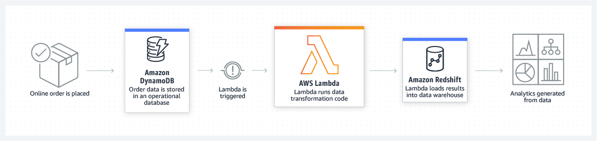

Serverless Demo
Building a full stack website with minimal infrastructure
Prepared by Scott Hankinson / Slalom Consulting


What is Serverless?
“Serverless computing, also known as function as a service (FaaS), is a cloud computing code execution model in which the cloud provider fully manages starting and stopping of a function's container platform as a service (PaaS) as necessary to serve requests, and requests are billed by an abstract measure of the resources required to satisfy the request, rather than per virtual machine, per hour.”
“Despite the name, it does not actually involve running code without servers. The name "serverless computing" is used because the business or person that owns the system does not have to purchase, rent or provision servers or virtual machines for the back-end code to run on.”
Miller, Ron (24 Nov 2015). "AWS Lambda Makes Serverless Applications A Reality"
More than just Lambda
Lambda

What languages are supported?
Node.js, Python, and Ruby support in-line code editing for quick testing, while Java, C#, Go, and PowerShell require deployment packages. For any complex function, deployment packages and a deploymnet tool will be a must.
Node.js 8.10 and 10
'use strict';
console.log('Loading function');
exports.handler = (event, context, callback) => {
//console.log('Received event:', JSON.stringify(event, null, 2));
console.log('value1 =', event.key1);
console.log('value2 =', event.key2);
console.log('value3 =', event.key3);
callback(null, event.key1); // Echo back the first key value
//callback('Something went wrong');
};
Python 2.7, 3.6, and 3.7
from __future__ import print_function
import json
print('Loading function')
def lambda_handler(event, context):
#print("Received event: " + json.dumps(event, indent=2))
print("value1 = " + event['key1'])
print("value2 = " + event['key2'])
print("value3 = " + event['key3'])
return event['key1'] # Echo back the first key value
#raise Exception('Something went wrong')
Ruby 2.5
module LambdaFunctions
class Handler
def self.process(event:,context:)
"Hello!"
end
end
end
Java 8
package example;
import com.amazonaws.services.lambda.runtime.Context;
import com.amazonaws.services.lambda.runtime.LambdaLogger;
public class Hello {
public String myHandler(int myCount, Context context) {
LambdaLogger logger = context.getLogger();
logger.log("received : " + myCount);
return String.valueOf(myCount);
}
}
Go 1.x
package main
import (
"fmt"
"context"
"github.com/aws/aws-lambda-go/lambda"
)
type MyEvent struct {
Name string `json:"name"`
}
func HandleRequest(ctx context.Context, name MyEvent) (string, error) {
return fmt.Sprintf("Hello %s!", name.Name ), nil
}
func main() {
lambda.Start(HandleRequest)
}
.NET Core 1.0 and 2.1 and PowerShell 6.0
using Amazon.Lambda.Core;
namespace LambdaFunctionExample{
public class Hello {
public string MyHandler(int count, ILambdaContext context) {
var logger = context.Logger;
logger.log("received : " + count);
return count.ToString();
}
}
}
Can we check your references?
Web Applications

Mobile Backends

ETL
Real-time File Processing

Real-time Stream Processing

IoT Backends

What about a real example?
Web Applications (Review)
Traditional Web Architecture

Serverless Architecture

Demo
- Route 53 / DNS Configuration / ACM
- HTTP Front End - Route53 and S3
- HTTPS Front End - Route 53, CloudFront and S3
- Back End - Route53, API Gateway, and Lambda
Organization and Automation
Lambda sounds awesome! What happens when I have something bigger than hello world? How do I manage my-awesome-function across lifecycles? Are there convenient ways of grouping shared functionality?
Organization - Front End
Wrap your S3 websites in Cloud Front distributions. S3 is HTTP only, CloudFront supports HTTPS.
Use DNS to expose your apps and also to make lifecycle management easy.
Keep multiple versions of your website available in a staging bucket and you can deploy and roll back with s3 cp.
Remember, anything in the bucket is publicly accessible -- don't put API keys in here!
Organization - Back End
How do you manage routes across multiple API Gateways leveraging multiple groups of Lamba Functions?
Use a tool! AWS SAM, Serverless Framework, Chalice
Organization - Back End
These tools provide a way of describing a collection of lambda functions and their events, and then handles generating the CloudFormation to deploy these functions as a unit.
Multiple collections may then be rolled up under a single API Gateway to generate the public facing API layer.
Group like code with like in the repository, and have your CI/CD tool issue the command to deploy them as a application
Caveats
All Web content must be static
We already follow this architectural pattern in may places -- single page applications or static web content (like this site) fueled by APIs on the back end.
Angular and React are excellent choices for larger applications, but any web framework (or none) will do.
Excellent for micro-sites or other rarely updated content.
Caveats
All APIs should be stateless
Functions should not rely on state stored to memory or disk, and have limited access to the underlying hardware and environment.
Consider using purpose-built databases like DynamoDB, Redis, or S3 to store stateful information for your endpoints.
Keep your functions lean -- too many items in startup lead to slow bloated functions.
Caveats
Database interactions can be trickier without a REST interface
There are strategies for sharing a connection pool, but you are not guaranteed to be able to re-use containers across invocations. Best effort applies.
For high throughput, a traditional ORM-backed server environment may still be required.
We can't say it enough, wherever possible consider using purpose-built databases. DynamoDB and S3 have great REST APIs.
Caveats
Environment variables can become tricker without an environment
How do you define an environment variable in S3?
Static config files must be hot-swapped per environment or discovered from the URL.
Lambda supports environment variables, though we recommend using SSM Parameter Store or Secrets Manager for complex applications.
Caveats
15 minute execution limit
For long-running processes or persistant connections, consider using Fargate or EC2.
For jobs which can be chunked, it is possible to 'save and continue' by doing a slice of work and then recursing.
The default timeout is 3s, and the most cost effective model for execution is quick burst. Any functions which regularly take over a minute may be good candidates for traditional servers.
Questions?
Thank You!
References
- AWS S3 -- serverless front end of choice
- AWS Lambda -- serverless back end of choice
- AWS API Gateway -- the REST glue to our lambda functions
- Serverless Framework -- deployment specialists
- Reveal.js -- what this presentation was built with